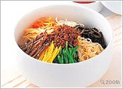
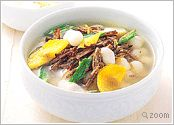
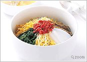
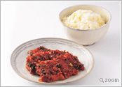
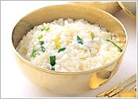
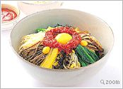
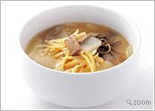

 Чунчон-до
Санчэ бибимбап
(пареный рис с разными дикими овощами)
Гуль-бап
(пареный рис с устрицами)
--- Hobak-bumbug
--- Dan-hobak-juk
Ёнбон-тхан
(суп из курицы и сазана)
Чонгукчжан-тиге
(суп из соевой пасты с соевым сыром-тофу)
Ольгэньи-гук
(суп с моллюсками)
Чжеюк-гочучжан-гуи
(жареная свинина с острой соевой пастой)
--- Jeyuk-gangjeong
--- Mu-wakjeoji
--- Kimchi
--- Soimori-dduk
 Гёнги-до
Чжорэньи тток-гук
(суп с рисовыми гренками-тток в виде коконов)
Самге-тхан
(суп из цыпленка с женьшенем)
--- Naengi-tojang-guk
--- Gaeseong mu-chim
Со Гальби-гуи
(жаренные на рашпере говяжьи ребра)
Двечжи Гальби-гуи
(жареные свиные ребра) и Дакнальге-гуи (жареные куриные крылышки)
--- Jukumi-jorim
Мемильмук Мучим
(приправленное гречневое желе с кимчи)
--- Durub-hoi
--- Hobak-seon
--- Jang-dduk
Биндэ-тток
(блинчики из перетертых бобов)
--- Haemul & chaeso bindae-dduk
--- Susu-bukumi
--- Bossam-Kimchi
--- Bangul jeungpyon
--- Jeungpyon
--- Susam-jeonggwa
 Гёнсан-до
--- Jinju bibimbap
--- Tongyeong bibimbap
Мубап и Дэгу-тха
(пареный рис с редькой) и (суп из трески)
Хотчжеса-бап
(вид бибимбап, Андонский стиль)
--- Gul-dduk-guk
--- Aehobak-juk
--- Oksusu-juk
--- Gunjin-guksu
--- Andong kalguksu
--- Jaechup-guk
Агу-тим
(пареный <морской чёрт>-англер)
+++ Agu-jorim - Агу-ёрим
(тушёный <морской чёрт>-англер)
Мидодок-тим
(пареный styela clava)
Доннэ-пхачжон
(обжаренный зеленый лук с морскими продуктами, стиль Доннэ)
--- Golgom-jjanji
Кимчи
: Уон-кимчи (кимчи из листьев лопуха), кхоннип-кимчи (кимчи из листьев соевых бобов), бучу-кимчи (кимчи из лука-порея)
--- Ssuk-gulle
--- Daechu-jingjo
--- Andong Shikhye
 Ганвон-до
Гамчжа-бап и Хвантхэ-гуи
(пареный рис с картофелем) и (жареная замороженная сушеная сайда)
Чунчон-макгуксу
(гречневая лапша, в стиле Чунчон)
--- Samsugi-tang
Дубу-чжонголь
(тофу-кассероль)
Очжиньо-сундэ
(фаршированные кальмары)
--- Ojing-eo bulgogi
Додок-гуи
(жареный додок)
--- Dotori-muk-muchim & Gamja-buchim
Чанранчжот-какдуги
(Кимчхи из редьки, нарезанной кубиками, с маринованным кишечником сайды)
--- Gamja songpyun
--- Gamja gyongdan
--- Chal-oksusu shiru-dduk
 Чжечжу-до
Окдом-чжук
(рисовая каша с морским лещом)
Миёк-чжук и Чжонбок-чжук
(рисовая каша с морскими водорослями) и (рисовая каша с морским ухом)
Госари-гук и Госари-чжон
(суп из папоротника) и (блинчики из папоротника)
Гальчи-хобак-гук
(суп из тыквы с рыбой-скаббард)
Обунчжаги-тим
(пареные ушные раковины)
Обунчжаги-чжук
(нанизанные ушные раковины)
--- Bing-dduk & Chajobssal-dduk
--- Milgam hwachae
 Чжолла-до
Чжончжу-бибимбап
(пареный рис с говядиной и овощами, в стиле Чжончжу)
--- Namul-kimbap & Namul-jumokbap
Кхоннамуль-гукбап
(рис с супом из проросших бобов)
Кимчи-бап
(пареный рис с кимчи)
--- Pimuno-juk
--- Hapja-juk
Чуо-тхан
(суп из ильной рыбы)
--- Hong-eo-oshiuk
--- Juksun-chim
--- Nakji-horong
--- Komak-hoi
Ккотге-чжан
(маринованные крабы)
--- Juksun-chae
--- Moui-namul
--- Bugak
--- Kongnamul-japchae
--- Kimchi
--- Hobakgoji-dduk
--- Jeonggwa
--- Gangjeong & Sanja
Сучжонгва
(пунш из корицы и сушеной хурмы)
 Сеул
--- Jangguk-bap
Соллон-тхан
(суп из говядины и костей)
--- Korigom-tang
--- Imjasu-tang
--- Naeng-guksu
--- Ae-tang
--- Daechu-juk
--- Dduk-chim
--- Dduk-kochi-gui & Dduk-chim
Тток-гук
(суп с нарезанными рисовыми гренками-Тток)
--- Mandu & Gyuasang
+++ Jijin pyonsu - Жижин пьёнсу
(поджаренные пьёнсу)
Трёхцветные манду
--- Shinsollo
Гальби-тим
(тушеные говяжьи ребра)
--- Domi-chim
+++ Omuk-chim - Омук-чим
(закуска из фаршированной рыбы)
Бульгоги
(или нобиани: жареная говядина)
--- Kochi-bulgogi & Ori-gui & Dak-gui
--- Soimori-pyonyuk
--- Tangpyong-chae
+++ Cheongpo-muk salad - Салат чёнгпо-мук
(салат из mungbean starch желе)
--- Gyoja-chae
--- Susam-naengchae & Chicken salad & Pork wrap with mustard sauce
--- Gujeol-pan
--- Modified gujeol-pan & mil-ssam
Чжапчэ
(китайская крахмальная лапша с обжаренными овощами и говядиной)
--- Seafood & Pimento & leek japchae
--- Oui-seon (cucumber with meat)
--- Pan-fried dishes
--- Pan-fried pimento & shrimp & squid & onion
--- Honghap-cho
--- Baek-Kimchi
--- Tong-baechu-Kimchi
--- Nabak-Kimchi
--- Jang-Kimchi
Яксик
(клейкий рисовый пирог, перемешанный с медом, сушеными китайскими финиками и каштанами)
--- Songpyun
--- Dutop-dduk
--- Maejak-gwa
--- Hwajeon
--- Omija jelly
--- Lemon-pyon
--- Jo-ran & Yul-ran & Saenggang-ran
--- Dashik
--- Bae-suk
--- Omija-bae hwachae
--- Bori-sudan
--- Shikhye
--- Wonso-byong
--- Hwayang-jeok